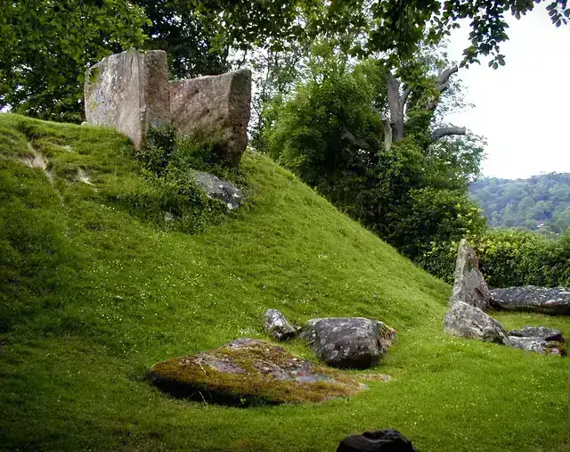

The claim
Alfred Watkins proposed in 1921 that ancient sites in Britain lie on straight lines, which he called leys, and later writers described them as channels of earth energy or as prehistoric trackways.
Maps, diagrams and images


The problems
The lines were drawn by selecting sites from a dense landscape of churches, mounds and crossroads; with enough points, straight alignments occur by chance. Statistical tests have found no more alignment than random points produce, and the 'energy' has never been detected.
The archive files it as debunked, and notes that the landscape is so full of marked places that any line will pass through several.
Documented: the proposal and its history.
Documented: the density of sites.
Tested: no excess alignment.
Not detected: any energy.
The label: debunked.
Why it is in the archive
Because it is the classic case of a pattern produced by the drawing method rather than found in the world.
Open resources on this topic
- BookRe U. S. Copyright Office Application 1-13266808291 Ley Lines By Krista Raina Dandridge Barnett (The Complete (Internet Archive, free to read)
- BookIMPORTANT I FEEL VIOLATED Re. Fwd IMMEDIATE ATTENTION REQUESTING LAW U. S. Copyright Office Application 1 1326 (Internet Archive, free to read)
- BookURGENT Publishing Error Re. Ley Lines ( Episode One Episode Eight Part Four) By Krista Raina Dandridge Barnett (Internet Archive, free to read)
- PapersOpen-access articles: DOAJ · PubMed Central · Internet Archive Scholar
- BooksPublic-domain and borrowable copies: Open Library · Project Gutenberg · Google Books
More images
Cite this page
Momin, S. (2026). Ley Lines. The Larger World Archive. https://drsamonline.github.io/LARGE_GLOBE/ley-lines.htmlMomin, Sohil. “Ley Lines.” The Larger World Archive, 2026, https://drsamonline.github.io/LARGE_GLOBE/ley-lines.html.Momin, Sohil. “Ley Lines.” The Larger World Archive, 2026. https://drsamonline.github.io/LARGE_GLOBE/ley-lines.html.@misc{ley2026ley,
author = {Momin, Sohil},
title = {Ley Lines},
year = {2026},
howpublished = {The Larger World Archive},
url = {https://drsamonline.github.io/LARGE_GLOBE/ley-lines.html},
note = {Last reviewed 20 November 2026}
}Last reviewed 20 November 2026 · Corrections policy · this page is not peer reviewed
Sources for this page
- Wikipedia, “Ley line” — the claimen.wikipedia.org
- Wikipedia, “Alfred Watkins” — the proposeren.wikipedia.org
- Wikipedia, “Pareidolia” — the perceptual effecten.wikipedia.org
- Wikipedia, “Selection bias” — the method's erroren.wikipedia.org